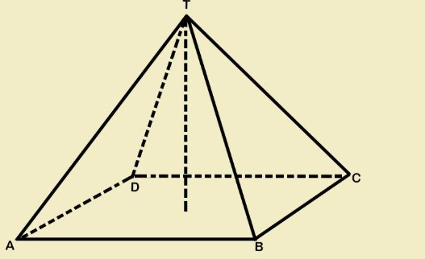

Panduan langkah demi langkah menggambar bangun ruang Limas Segiempat T.ABCD pada buku tulis berpetak sesuai gambar soal. Pelajari cara menggambar proyeksi alas jajar genjang, menentukan titik puncak T tegak lurus, dan aturan rusuk putus-putus.
Saksikan pensil dan penggaris menggambar rusuk demi rusuk: dari alas jajar genjang, titik pusat O, tinggi OT, hingga titik puncak T
Menggambar rusuk depan AB dan samping kanan BC dengan garis tebal nyata, lalu menarik rusuk belakang AD dan CD menggunakan garis putus-putus.
Siapkan perlengkapan alat tulis geometri berikut sebelum mulai menggambar di buku tugas
Untuk membuat garis sketsa diagonal dan tinggi tipis agar mudah dihapus atau ditegaskan nanti.
Wajib digunakan saat menarik rusuk alas dan rusuk tegak miring menuju puncak T agar presisi.
Sangat dianjurkan! Kotak berpetak memudahkan membuat kemiringan jajar genjang yang rapi dan konsisten.
Untuk menebalkan rusuk-rusuk nyata yang terlihat di bagian depan (rusuk AB, BC, TA, TB, dan TC).
Untuk memastikan garis tinggi limas berdiri tegak lurus 90° tepat dari titik pusat proyeksi alas O.
Untuk memastikan jarak sisi rusuk alas persegi teratur sama panjang di seluruh sisi.
Panduan menggambar mengacu persis pada orientasi sudut dan titik pada gambar acuan soal ini

Limas Segiempat T.ABCDT di posisi teratas.A (kiri depan), B (kanan depan), C (kanan belakang), D (kiri belakang).AB (depan mendatar) dan BC (samping kanan miring).CD (belakang mendatar) dan AD (samping kiri miring).TA, TB, dan TC (menghadap ke arah pengamat).TD (menghubungkan puncak T ke sudut belakang D).Skema vektor stereometri presisi sesuai gambar acuan soal limas-ref.png
Panduan 6 tahap terstruktur menggambar limas segiempat di buku tulismu
Konsep Utama Gambar Ruang 3D: Meskipun bentuk asli alas limas adalah bujur sangkar persegi, pada gambar proyeksi miring alas harus digambar berupa jajar genjang agar tampak berkedalaman 3D!
A → B di bagian depan dengan garis tebal nyata.A → C (putus-putus tipis).B → D (putus-putus tipis).T di puncak, A di kiri depan, B di kanan depan, C di kanan belakang, dan D di kiri belakang.AD, CD, dan TD) serta garis tinggi di tengah.Hitung luas permukaan, volume, dan perkiraan ruang gambar di buku tulis
√(H² + (a/2)²) = √(10² + 4²) = √116 ≈ 10.8 cmLuas Alas + 4 × Luas Segitiga = a² + 2 × a × ts⅓ × Luas Alas × Tinggi Limas = ⅓ × a² × H